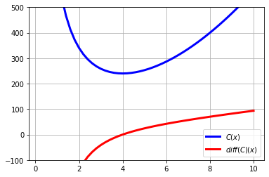

MINIMIZATION EXERCISE:#
A closed box with a square base and volume \(80\) dm\(^3\) is to be constructed. For the lid and the lateral surface, a material costing 2 €/dm\(^2\) is to be used, and for the base another material costing 3 €/dm\(^2\) is to be used. Compute the dimensions of the box for which the cost is minimal.
Note: This exercise appeared in the Galicia ABAU (university entrance exam) in 2017. You can consult the full exam here:
https://ciug.gal/PDF/examesabauanosanteriores/probas/2017/ABAU_2017_MatematicasII.pdf
Solution:
We therefore have a box with square base of side length \(x\) and height \(h\), as shown in the following figure:

Let us impose the constraint. We are told that the volume must be equal to 80 dm\(^3\), so:
The statement tells us that we use a material costing 2 €/dm\(^2\) for the lid and for each of the 4 lateral faces, and another material (we understand it is more resistant…) costing 3 €/dm\(^2\) for the base. Therefore, if we denote by \(C\) the material cost of the box:
Notice that, since the variable lies in the open interval \((0,+\infty)\), the hypotheses of the Weierstrass Theorem are not satisfied. That does not mean that an absolute minimum does not exist; it only means that the theorem does not guarantee it, so we will have to prove its existence in some other way.
So, if this function has an absolute minimum, where can it be? Notice that on \((0,+\infty)\) it is a continuous and differentiable function, so if it has absolute minima they must occur either at the ends of the interval or at points where the derivative is \(0\). Let us explore these possibilities!
Now let us look at what happens at \(x=4\). For this we will use the second derivative test, although the first derivative test would work perfectly well too. Thus: $\( C''(x) = 10 + \frac{1280}{x^3} \Longrightarrow C''(4) = 30 >0, \)\( so we already know that there is a relative minimum at \)x=4\(. This relative minimum is absolute because we have seen that at the ends the cost function \)C(x)\( tends to \)+\infty$.
Therefore, the answer to the exercise is: \(x=4\) dm, \(h=\dfrac{80}{4^2}=5\) dm.
Now let us carry out those same calculations with the help of Python and plot the function:
import sympy as sp
x = sp.Symbol('x', real=True)
# Define $C$ with a symbolic expression
expr = 5*x**2 + 640/x
print('C(x) = ',expr)
print('diff(C)(x) = ', sp.diff(expr, x))
# Compute the critical points of $C$ by solving the equation diff(C) = 0
pto_critico = sp.solve(sp.diff(expr, x), x)
# Extract $a$ as the first solution (index 0 in Python) of the previous equation (there could be many solutions)
a = pto_critico[0]
print('a = ',a)
# Evaluate the second derivative at $a$
print('Second derivative of C at a: ', sp.diff(expr, x, 2).subs(x,a))
C(x) = 5*x**2 + 640/x
diff(C)(x) = 10*x - 640/x**2
a = 4
Second derivative of C at a: 30
# import the numpy and pyplot modules
import numpy as np
import matplotlib.pyplot as plt
# Choose $x$ values to evaluate the functions
x = np.linspace(0.2, 10)
# Compute the 2 functions ($C$ and its derivative) at the $x$ values
y1 = 5*(x**2) + 640/x
y2 = 10*x - 640/(x**2)
# plot
fig = plt.figure()
ax = fig.add_subplot(111)
ax.plot(x, y1, c='b', label=r'$C(x)$',linewidth=3.0)
ax.plot(x, y2, c='r', label=r'$diff(C)(x)$',linewidth=3.0)
plt.ylim(-100,500)
leg = plt.legend()
plt.grid()
plt.show()
